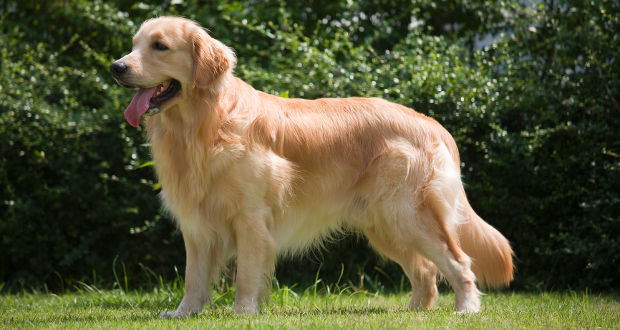

Golden Ritriever
Golden Retriever
개의 품종 중 하나로, 원산지는 영국의 스코틀랜드 지역이다. 비슷하게 생긴 래브라도 리트리버가 원형이다. 이름대로 윤기가 흐르는 크림빛 또는 금빛의 풍성한 털이 가장 큰 특징이며 은은하게 귀티가 흐르는 인상이다.
마당이 있는 집이 일반적인 미국과 영국, 또한 영국의 직할 속령이었던 아일랜드, 캐나다, 오스트레일리아나 뉴질랜드에서 자주 볼 수 있는 견종이라고 한다.
학대, 방임, 공격성을 방치한 훈육 등의 악조건을 겪지 않은 골든 리트리버는 대체로 온화한 성격을 지닌다. 강형욱 훈련사는 골든 리트리버의 온화한 성격에 대해 "100개의 옐로 카드를 가졌고, 한숨 자고 나면 옐로 카드가 전부 회복된다"라고 설명하기도 했다. 누군가 자신을 괴롭히더라도 99번까지는 봐줄 만큼 인내심이 좋다는 뜻.